Robokolo
Kompletní redesign vizuální identity. Cílem bylo posunout značku od „garážového hobby“ k moderní technologické firmě. Výstupem je nové logo, piktogram, tiskoviny a merch.
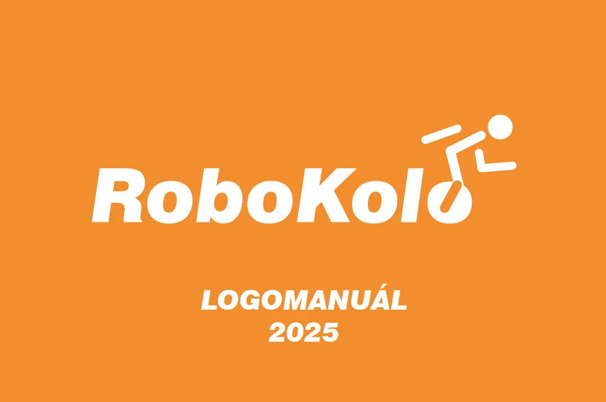
Rebranding
Cílem redesignu bylo posunout vizuální styl od „garážového projektu“ k moderní technologické značce. Nové logo využívá čisté geometrické tvary a výraznější typografii.
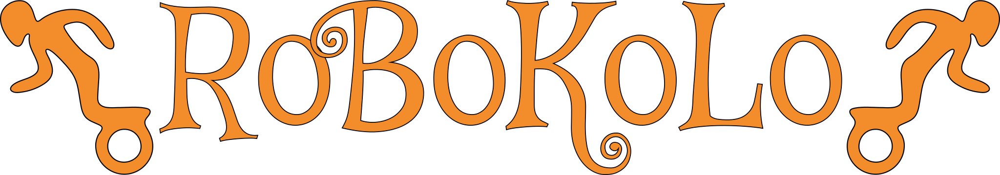
Piktogram
Piktogram je zjednodušenou verzí loga, určenou pro malé formáty, ikony aplikací a sociální sítě. Zachovává dynamiku a rozpoznatelnost značky i bez textové části.
Firemní tiskoviny
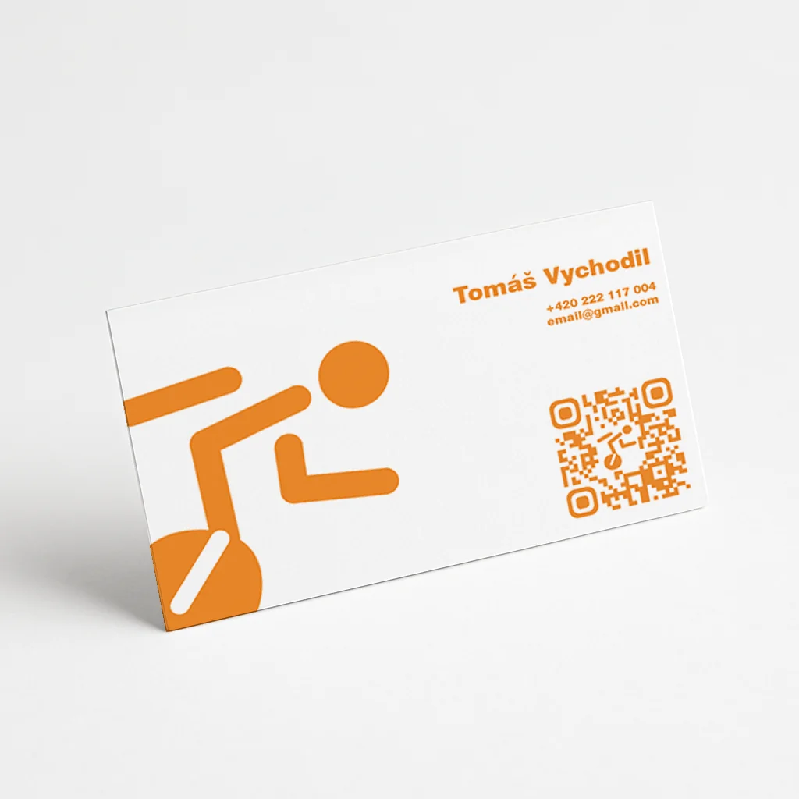
Vizitky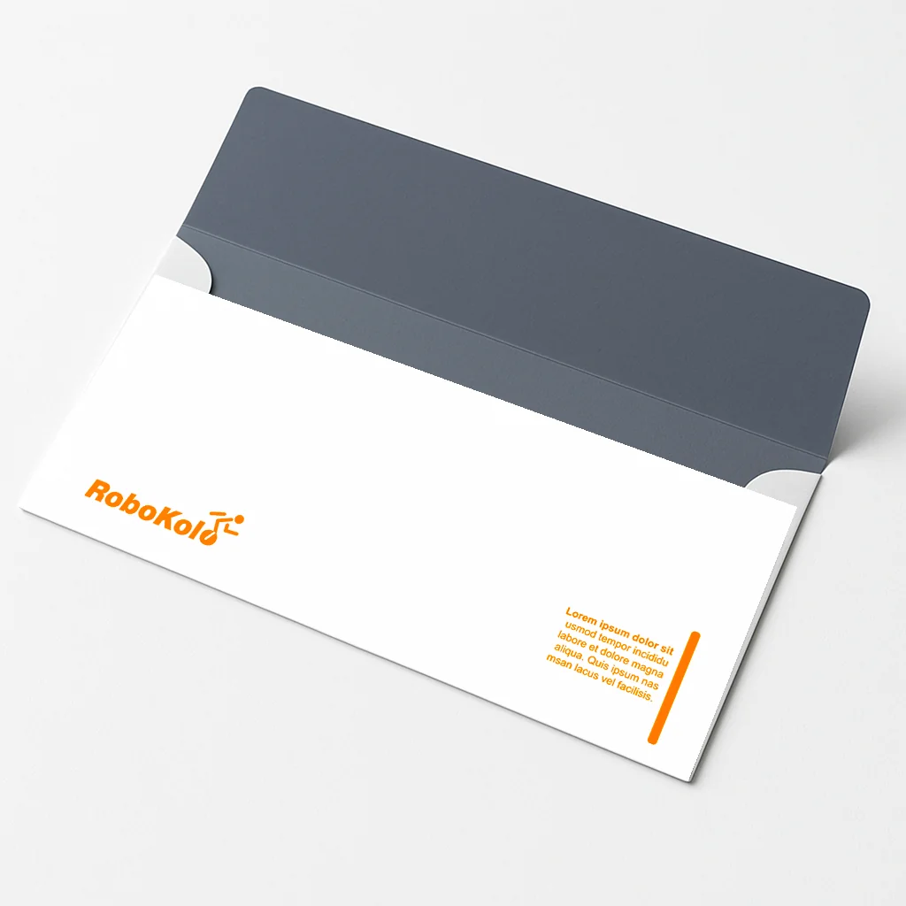
DL obálka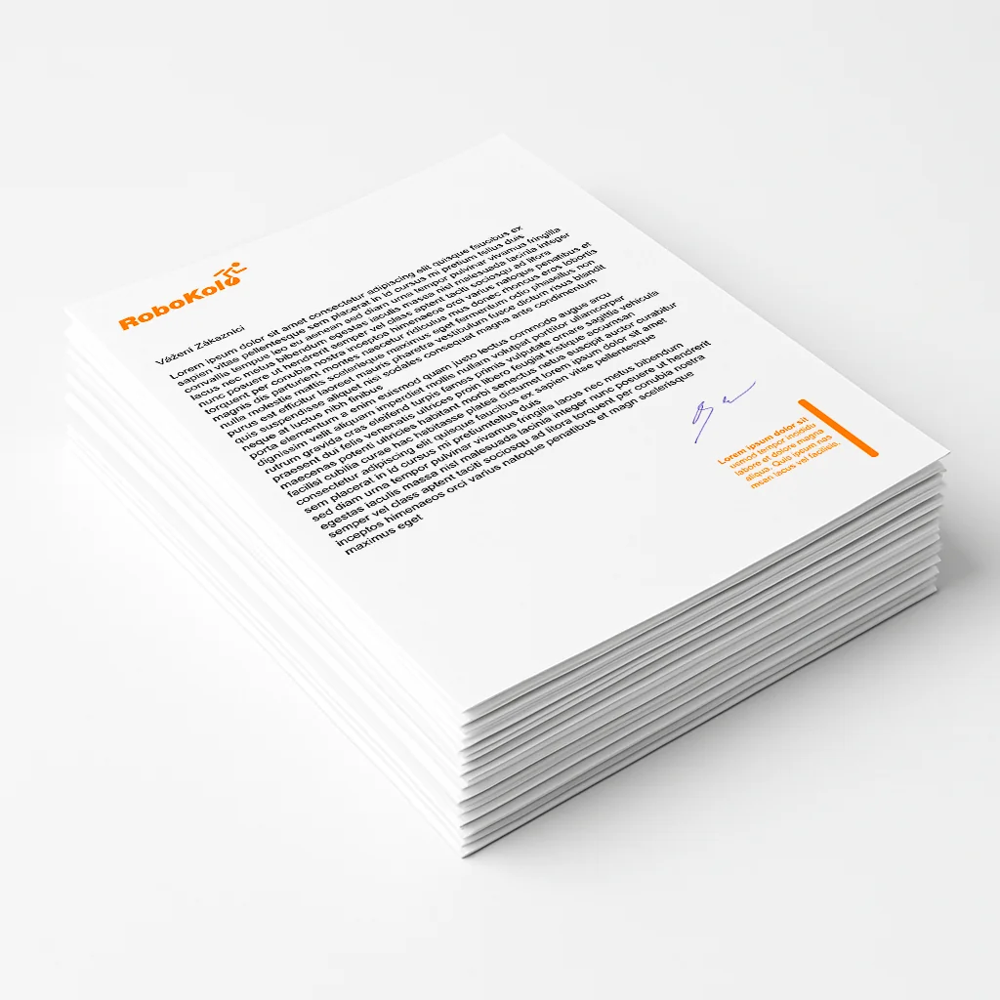
Hlavičkový papírMerch & produkty
Aplikace nové identity na fyzické produkty. Od plechovek po textil.
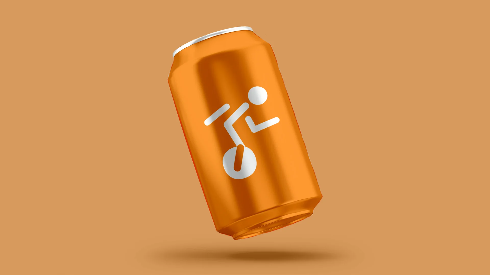
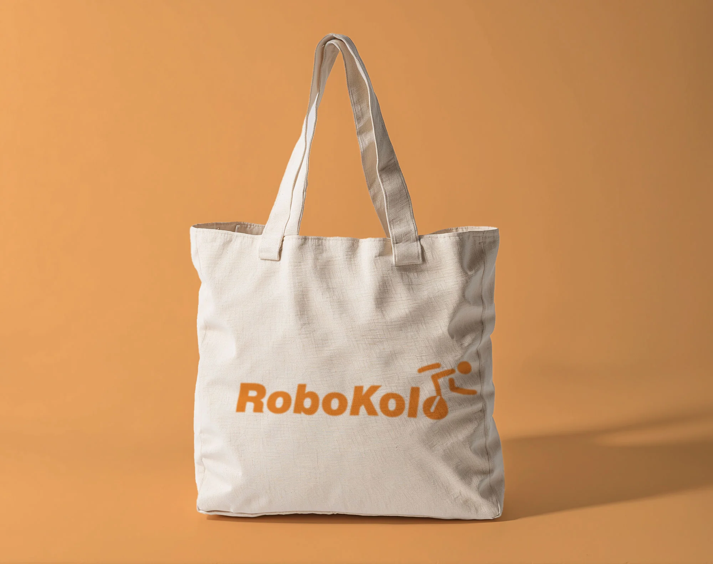
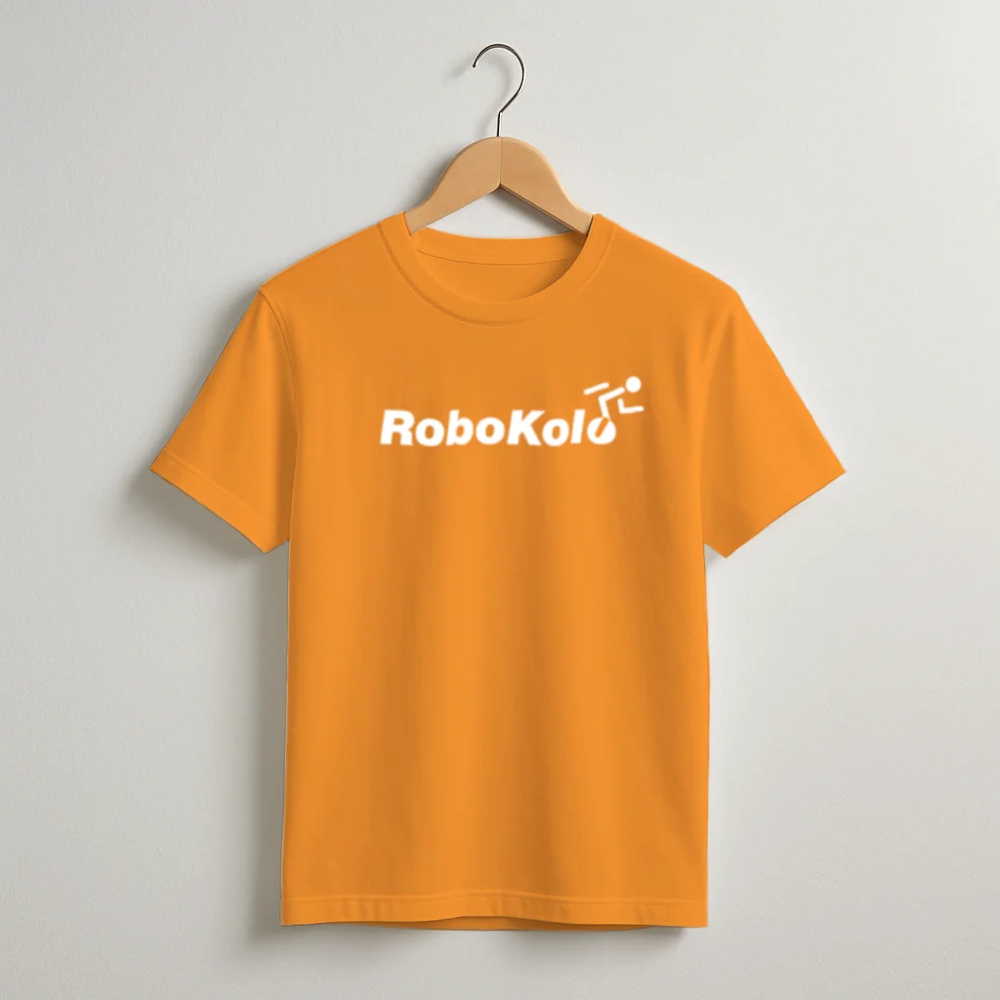

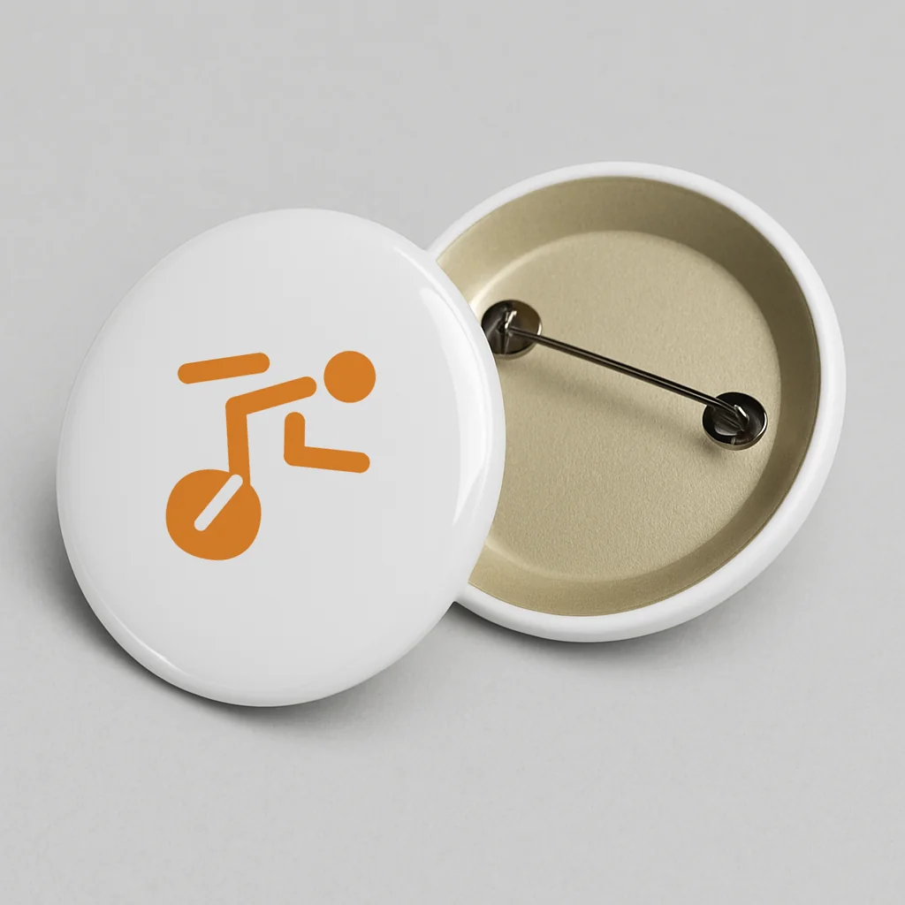
Proces & skici
Pohled do zákulisí tvorby loga. Prvotní nápady na papíře.
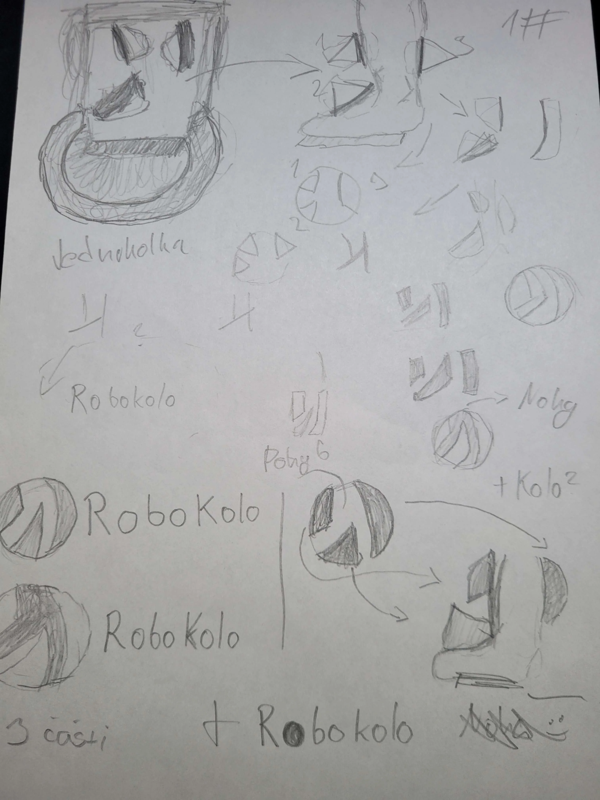
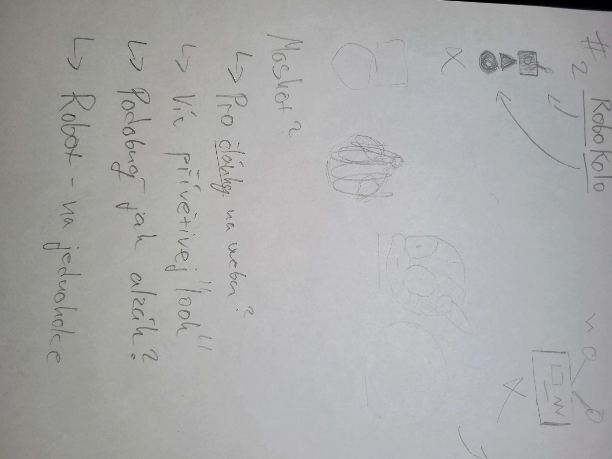
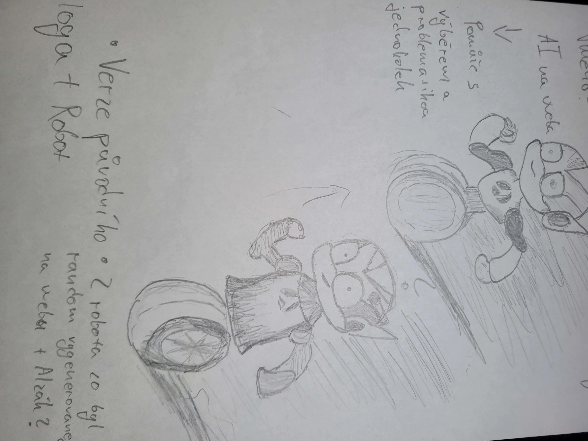